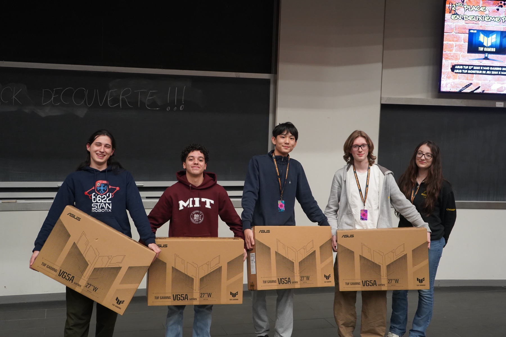
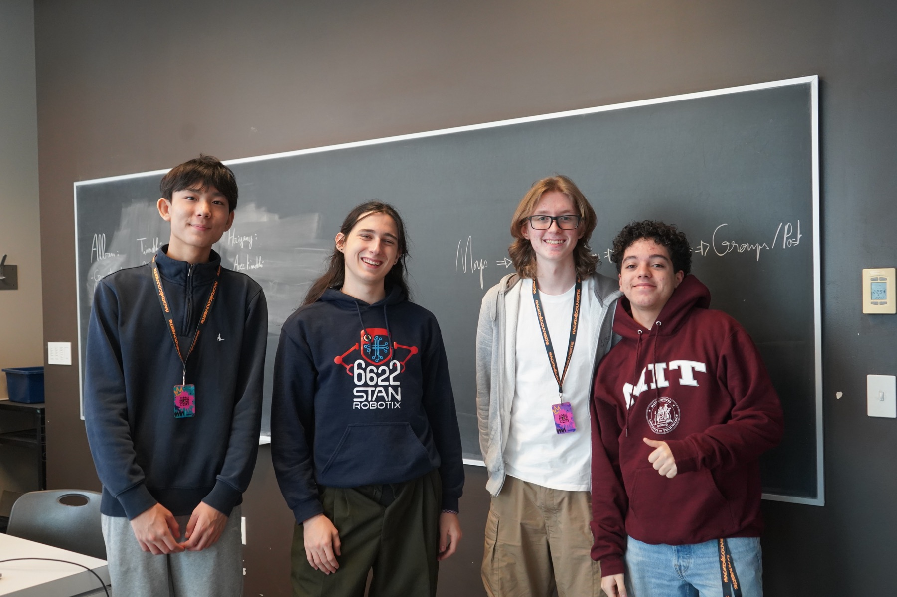
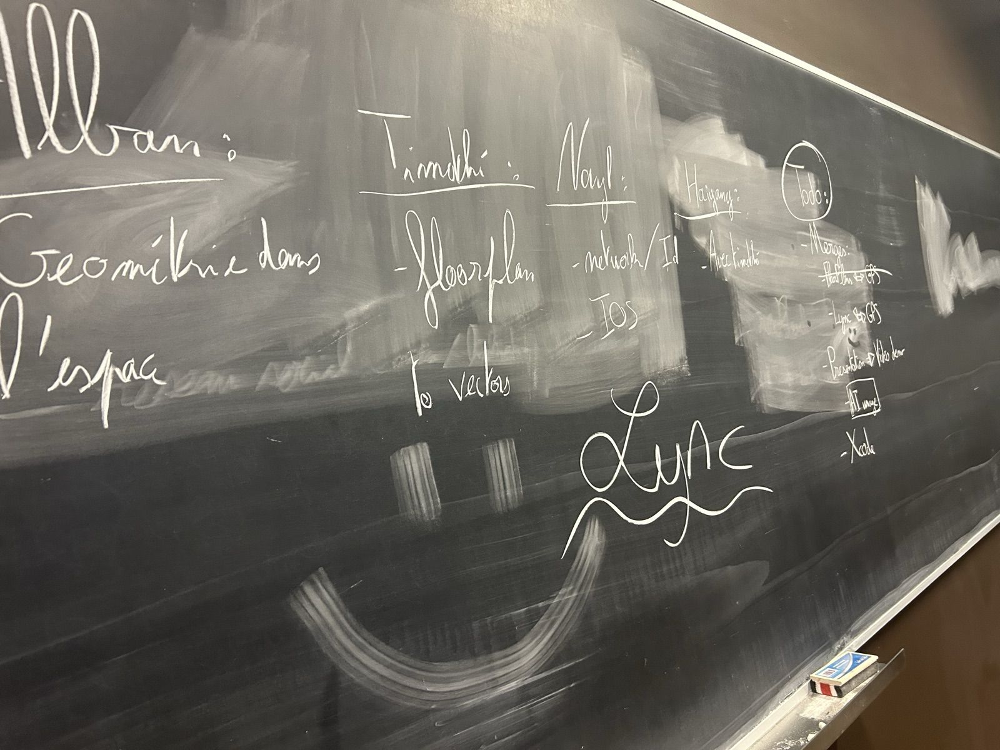
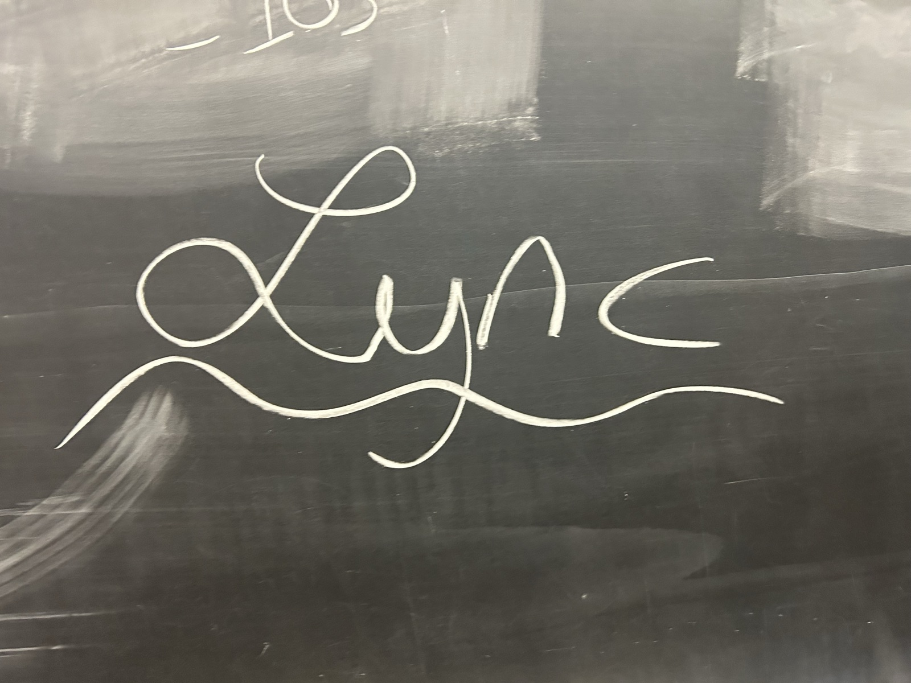

Lync
Trouver sa salle sur un campus qu'on ne connaît pas, sans GPS à l'intérieur. Une app conçue et construite en équipe pendant HackDécouverte 2, à l'Université Concordia.
Finding your room on a campus you don't know, with no GPS indoors. An app designed and built as a team during HackDécouverte 2 at Concordia University.
- RésultatResult
- 2e place, HackDécouverte 22nd place, HackDécouverte 2
- PlateformesPlatforms
- Android et iOSAndroid and iOS
- Bâtiment cartographiéBuilding mapped
- John Molson, 7 étagesJohn Molson, 7 floors
- FiabilitéReliability
- 120 tests unitaires120 unit tests
Le problèmeThe problem
Le GPS s'arrête à la porte des bâtiments. Pour un nouvel étudiant, une salle comme MB-2.255 ne veut rien dire : quel bâtiment, quel étage, quel couloir ? On voulait une app qui guide de la rue jusqu'à la porte de la salle, et qui serve aussi à rencontrer les gens de son campus.
GPS stops at the building door. For a new student, a room like MB-2.255 means nothing: which building, which floor, which hallway? We wanted an app that guides you from the street to the classroom door, and that also helps you meet people on your campus.
Ce qu'on a construitWhat we built
- Réseau : un réseau social réservé au campus avec fil, stories, camarades, clubs, événements et carte des amis en direct.
- Cartes : tu choisis une salle (ou un cours dans ton calendrier), Lync te guide dans les rues comme une app de cartes, puis passe tout seul au plan intérieur quand tu entres dans le bâtiment.
- Étage par étage : l'app détecte l'étage par l'altitude et compte tes pas pour avancer le point sur le plan.
- Données : 761 points de navigation, environ 300 salles, escaliers et ascenseurs reliés entre les étages.
- Network: a campus-only social app with a feed, stories, classmates, clubs, events and a live friends map.
- Maps: pick a room (or a class in your calendar), Lync walks you through the streets like a maps app, then switches to the indoor floor plan by itself when you enter the building.
- Floor by floor: the app detects your floor from altitude and counts your steps to move the dot on the plan.
- Data: 761 navigation nodes, about 300 rooms, stairs and elevators linked between floors.
Le défi technique : se repérer sans GPSThe hard part: positioning without GPS
À l'intérieur, l'app estime ta position pas à pas (navigation à l'estime, ou PDR). Chaque pas détecté fait avancer le point d'une longueur de pas, dans la direction où tu marches. Simple sur le papier, plein de pièges en vrai :
Indoors, the app estimates your position step by step (pedestrian dead reckoning, PDR). Each detected step moves the dot by one step length, in the direction you are walking. Simple on paper, full of traps in practice:
Le métal fausse le nordMetal breaks the compass
Le magnétomètre saute près des structures en acier. On utilise un capteur d'orientation qui fusionne gyroscope et accéléromètre sans magnétomètre : pas de sauts, au prix d'un cap relatif au point de départ.
The magnetometer jumps near steel structures. We use an orientation sensor that fuses gyroscope and accelerometer without the magnetometer: no jumps, at the cost of a heading relative to the starting point.
Des pas qui arrivent en retardSteps that arrive late
Le détecteur de pas d'Android peut livrer un pas jusqu'à ~2 s après le contact du pied. On garde 2,5 s d'historique d'orientation pour retrouver le cap au moment exact du pas, pas le cap actuel.
Android's step detector can deliver a step up to ~2 s after the foot lands. We keep 2.5 s of orientation history to recover the heading at the exact moment of the step, not the current one.
Moyenner des anglesAveraging angles
La moyenne de +179° et −179° n'est pas 0°. Le cap de chaque pas est une moyenne circulaire sur les 150 ms qui précèdent : θ = atan2(Σ sin θᵢ, Σ cos θᵢ).
The average of +179° and −179° is not 0°. Each step's heading is a circular mean over the previous 150 ms: θ = atan2(Σ sin θᵢ, Σ cos θᵢ).
Ta longueur de pasYour step length
Au départ, tu marches 5 mètres : la longueur de pas vaut 5 m divisés par le nombre de pas, et elle doit rester plausible (entre 0,2 et 1,5 m). Sinon l'app demande de recommencer.
At the start you walk 5 metres: step length is 5 m divided by the number of steps, and it must stay plausible (0.2 to 1.5 m). Otherwise the app asks you to redo it.
// for each accepted step θ = meanHeadingAt(step.timestamp) − referenceYaw pos = pos + (L · sin θ, L · cos θ) distance += L
StackStack
L'app fonctionne aussi hors ligne avec des données de démonstration de Concordia, ce qui a permis de la présenter au jury sans dépendre du réseau.
The app also runs offline on built-in Concordia demo data, which let us demo it to the judges without depending on the network.



